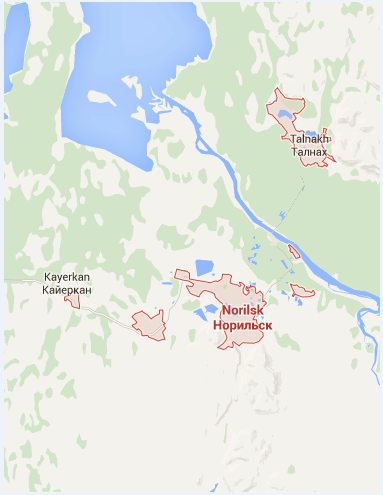
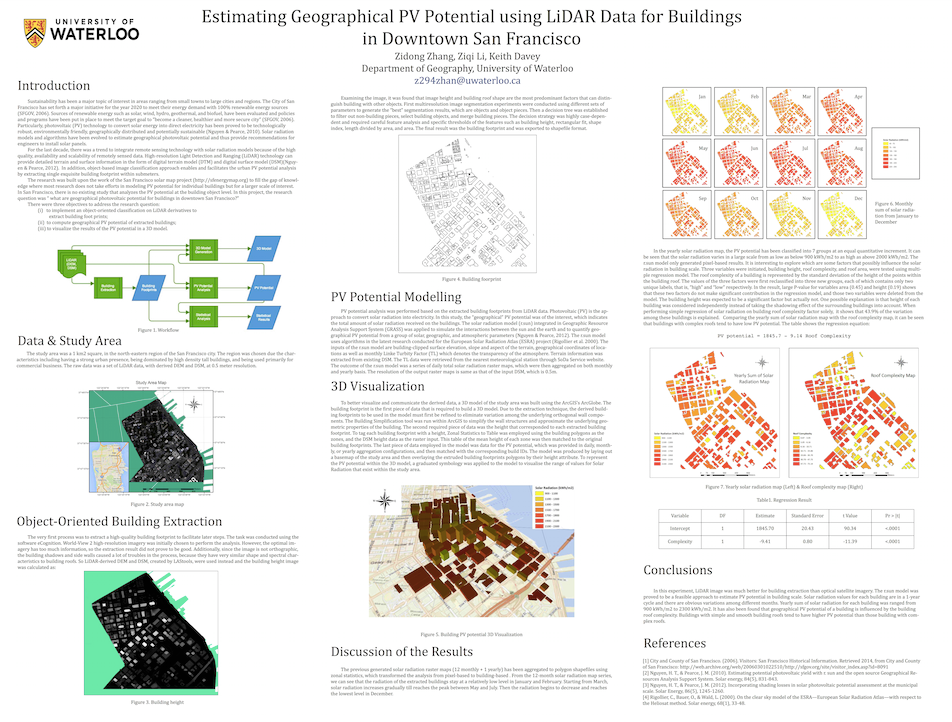
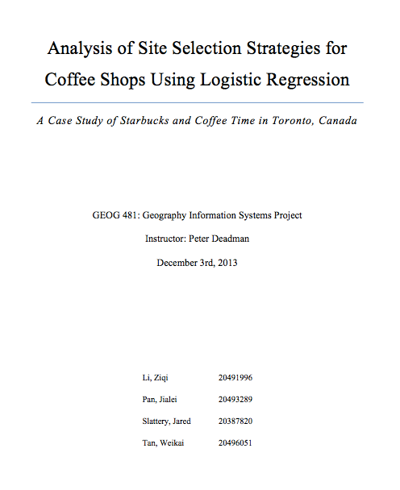

Education
Sep 2014 - Present
MA student in Geography, Department of Geography,
George Washington University, US
George Washington University, US
Sep 2012 - Jul 2014
BES (Hons) in Geomatics
Minor in Computer Science & Diploma of Excellence in GIS,
University of Waterloo, Canada
Minor in Computer Science & Diploma of Excellence in GIS,
University of Waterloo, Canada
Sep 2010 - Jul 2012
BEng in Remote Sensing Information and Technology,
Wuhan University, China
Wuhan University, China
Projects

Effects of Arctic Urban and Industrial Development on Land Surface Temperature: A Case Study for the Norilsk Region, Russia (In progress).
Working with Prof. Shiklomanov and Kelsey Nyland.
Working with Prof. Shiklomanov and Kelsey Nyland.

Estimating Geographical PV Potential using LiDAR Data for Buildings in Downtown San Francisco.
Worked with Zidong Zhang and Keith Davey.
Worked with Zidong Zhang and Keith Davey.
Evaluating the potential applicability to estimate thawing season active layer depth using MODIS LST and NDVI in North Slope of Alaska, USA.
Worked with Prof. Duguay.
Worked with Prof. Duguay.

Analysis of Site Selection Strategies for Coffee Shops Using Logistic Regression: A Case Study of Starbucks and Coffee Time in Toronto, Canada.
Worked with Weikai Tan, Jialei Pan, and Jared Slattery.
Worked with Weikai Tan, Jialei Pan, and Jared Slattery.
Publications
Estimating Geographical PV Potential using LiDAR Data for Buildings in Downtown San Francisco
(Acceped by Transactions in GIS in Jan 12)
There will be a lot more !!!
Awards
Graduate Research Assistantship on CALM project (funded by NSF)
George Washington University
Sept 2012 - present
Dean's Honours List
University of Waterloo
2012 - 2014
Faculty of Environment - Chinese Universities Entrance Scholarship
University of Waterloo
Sept 2012